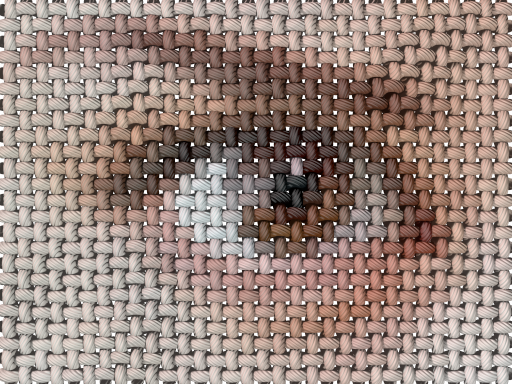
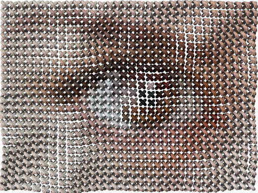
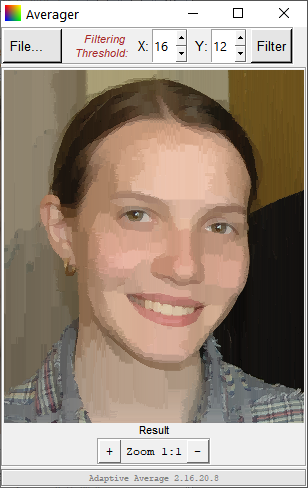

POV-Ray Thread: Linen and Stitch
Converting 2D image into canvas and cross-stitch 3D simulation
POV‑Ray Thread, a bastardly offspring of POV‑Ray Mosaic project is a program, which read pixels of source image and convert them into a complex 3D structure, simulating something textile and thread related, in POV-Ray format.
You can download POV‑Ray Thread from GitHub and use it for free.
Currently POV‑Ray Thread contain two export functions: Linen and Stitch.
Linen...
linen output rendering example
«Linen» is a program for simulating most common plain weave, seen in many cotton, wool, and practically all linen fabrics. Elemental nodes of linen output are colored after source image pixels, producing colored taffeta or print on canvas look.
Resulting POV‑Ray files are easy to edit, globally changing thread finish (dull/shiny) and texture (normal vectors) to simulate wide range of threads, from single strand plastic to multistrand natural fibers.
...and Stitch
stitch output rendering example
«Stitch» is a program for simulating most common cross-stitching embroidery type, i.e. a cross stitch. Each of 3D stitches produced by program is colored after source image pixel. Stitch pattern may be distorted during rendering, turning too regular artificial appearance into something more natural. Distortion is based on structured Perlin noise pattern.
Currently both POV‑Ray Thread programs use one primitive to simulate main object, but this, as almost any other setting, may be overridden. The easiest way to do so is using external "preset.inc" patch files which, upon importing into main scene file, will override all previous settings. Currently POV‑Ray Thread distribution contain several isosurface-based presets, providing extremely fine details on large-scale renderings.
example of rendering using include file with isosurface main object
Accessory: Adaptive color averager
In cross stitching, single thread is often used to produce several stitches in a row, producing flat single color areas. To help with color reduction for this, a small color reduction utility «Averager» is included into the package.
Unlike regular color reduction utilities, like ones used to create GIF files, «Averager» does not build common palette for the whole image but rather tries to find, isolate, and flatten smooth areas based on local contrast, that is closer to idea of using single thread for the area.
«Averager» is an accessory since it does not produce POV files - it loads PNG or PPM file, filters image, and saves filtered image as PNG or PPM.
To simplify visual filtering adjustments, «Averager» is equipped with minimal yet suitable Tkinter-based GUI.
Update: in release ver. 1.20.7.14, filter module was substantially rewritten (module version 3.20.7.14) to correctly support all color modes from L to RGBA. Wrap around processing of seamless patterns added to «Averager»; default behaviour for «Averager» is filtering alpha channel, for «POV‑Ray Thread» - keeping source alpha.
Previously on POV-Ray Thread: since ver. 1.16.20.20 both POVRayThread.py and Averager.py support zooming in/out with mouse clicks on preview. In general, click reaction is as follows:
- After starting program double click on preview area (or Ctrl+O) is equal to "Open image", right click (or Alt+F) brings general "File..." menu;
- After opening an image Ctrl+click is "zoom in", Alt+click is "zoom out", similar to Photoshop;
- Unlike Photoshop, mouse wheel also works for zooming in and out;
- "Enter" runs filter, after that filter result is shown;
- After filtering, left click switches before/after images. Be patient though, since double click still works as "Open...".
Since ver. 1.16.6.18 POV‑Ray Thread, beside easy to use GUI, got adaptive averaging filter linked, so now it is capable to perform image filtering on its own; therefore additional «Averager» utility became obsolete. However, updated version of «Averager» remains included into this package as a good example, illustrating a possibility of writing fully functional image filtering application using pure Python - filtering module itself is written in Python; image files reading and writing is based on PyPNG and PyPNM, both of them being pure Python modules; filter preview is based on PyPNM and Tkinter, and, surprisingly, all this works with reasonable speed.
Now it's time to download POV‑Ray Thread from GitHub and start building your own textile scenes.
...or Move back to main page.